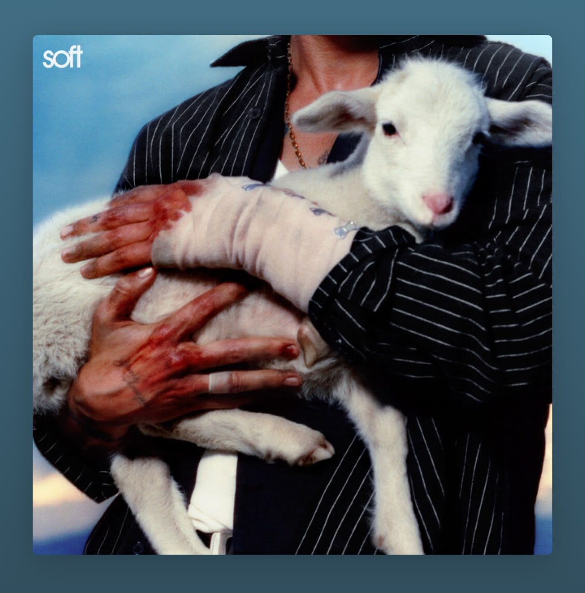
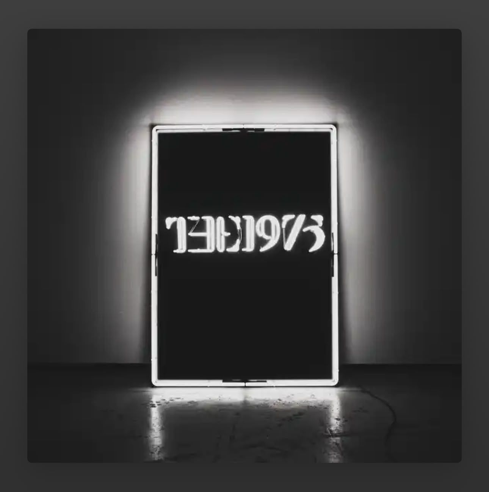
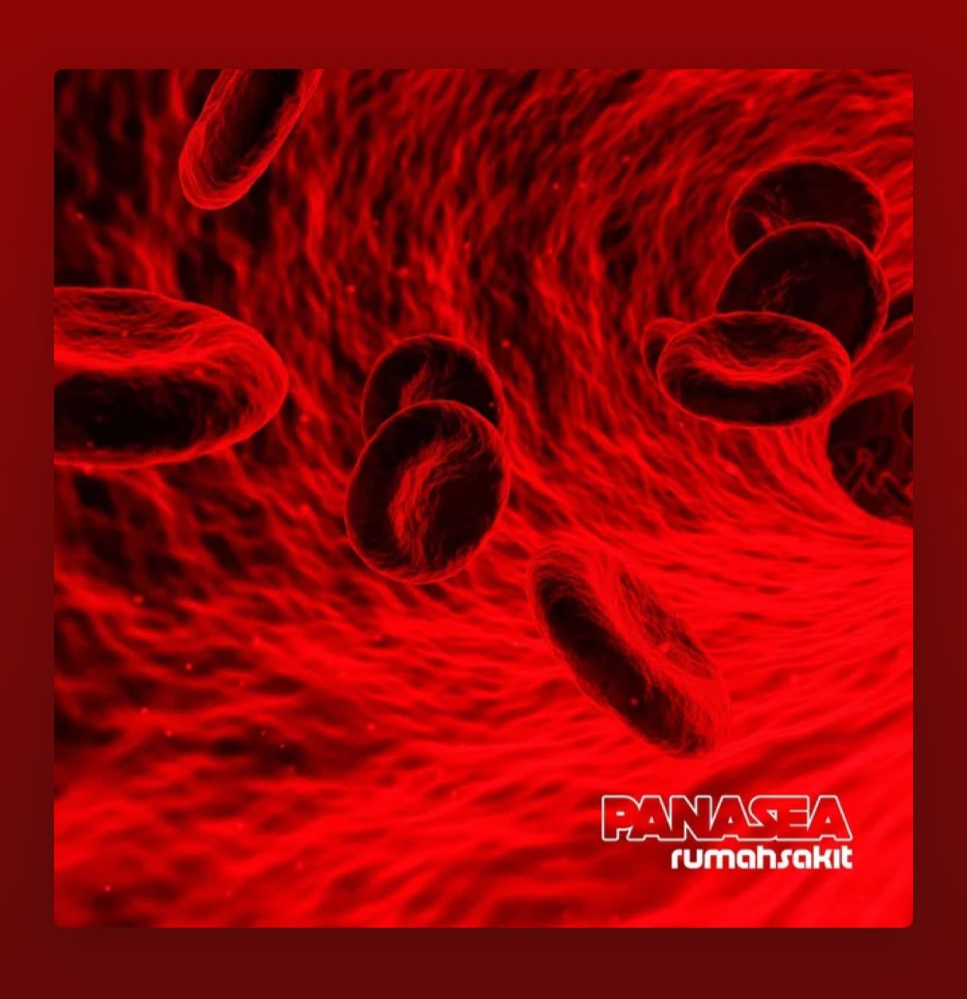

Momen Kebersamaan
DNA Gang!!
"Beauty Brain Behaviour."
Anggota Tim (3 Orang)
Klik tombol di bawah kartu untuk melihat detail lengkap.

Fransiska Dea
- Lahir: 20 Maret 2010
- Asal: Palembang
- @fransiskadea.azl

Warna Fav
Biru

Lagu Fav
Stuck

Theresia Angelina
- Lahir: 14 Agustus 2009
- Asal: Yogyakarta
- @anlaricce

Warna Fav
Navy

Lagu Fav
Robbers

Vicencia Nadia
- Lahir: 25 September 2009
- Asal: Lampung
- @vicencianp

Warna Fav
Pastel

Lagu Fav
Panasea